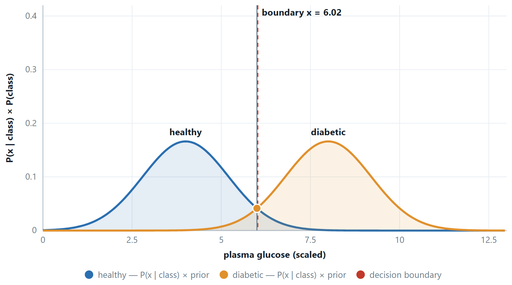

Chapter 7: Naive Bayes¶
Decision trees ask a sequence of questions of the data. Naive Bayes takes a different route: it asks how probable each class is given everything observed, and answers with Bayes' theorem. The 'naive' assumption that the features are independent within a class turns an intractable estimation problem into a few counts, and the result is a classifier that is fast, needs little data and is the standard baseline for text. This chapter derives the rule, works it by hand on a small table, shows what to do about zero counts and numeric features, and states plainly where the assumption breaks.
7.1 Naïve Bayes¶
You want \(P(\text{spam} \mid \text{this} \text{email})\). Bayes' theorem turns that around into something you can count: \(P(\text{email} \mid \text{spam}) \times P(\text{spam})\), divided by a constant that is the same for every class and therefore cannot change which class wins. But \(P(\text{email} \mid \text{spam})\) is the probability of that exact combination of words, which you have almost certainly never seen before, so counting it is hopeless.
The naïve step is to pretend the features are independent given the class, which lets you multiply their individual probabilities. The assumption is false — words travel in company — and the classifier works anyway, because it only has to get the ranking of the classes right, not the probabilities.
the naïve Bayes rule: prior times the product of the per-feature likelihoods
The zero-frequency problem
A single unseen feature–class combination sets one factor to zero, and zero times anything is zero. One missing cell in a training table vetoes a class outright. Laplace smoothing adds \(\alpha\) to every count and \(\alpha \times\) (number of values) to each denominator, so nothing is ever impossible — only rare. \(\alpha = 1\) is the standard choice.
What to do when a feature is a number¶
Counting works while the features are categories — Sunny, Overcast, Rain. It stops working the moment a feature is a measurement. Nobody in your training set has a glucose reading of exactly 137.4, so the count is zero and the class is vetoed, and rounding to the nearest whole number only hides the problem.
The fix is to stop counting and start assuming a shape. For each class, and each feature separately, assume the values follow a normal distribution, and estimate its two numbers from the training examples of that class.
Definition: Gaussian naïve Bayes
\(P(x_{j} = v \mid C) = (1 / \sqrt{2\pi \sigma _{\text{jC}}^{2}}) \cdot \exp(\) −(v \(- \mu _{\text{jC}})^{2} / (2\sigma _{\text{jC}}^{2}\)) )
\(\mu _{\text{jC}}\) is the mean of feature \(j\) among the training examples of class \(C\), and \(\sigma _{\text{jC}}^{2}\) is their variance. Two numbers per feature per class — that is the entire model.
Read the formula in three pieces and it stops looking forbidding. The bracket \((v - \mu )/\sigma\) is the z-score of Unit 2: how many standard deviations the value is from that class's average. Squaring and negating it means the further away, the smaller the result, and the fall is quick because it is squared inside an exponential. The factor in front, \(1/\sqrt{2\pi \sigma ^{2}}\), is only there to make the area under the curve equal to 1; it does no work in the comparison, because it appears for every class.
This is a density, not a probability
Its value can exceed 1 — with \(\sigma = 0.1\) the peak is about 4 — and \(P(x = 137.4)\) for a continuous quantity is strictly zero. What the number means is relative plausibility, and naïve Bayes only ever compares two of them for the same \(x\), so the distinction never affects the answer. It does affect what you may say about the number: never quote a density as “the probability of that reading”.

Example 7.1: \(\cdot A\) worked value, so the formula is not just a picture
Among the healthy training examples a feature has mean \(\mu = 4.0\) and standard deviation \(\sigma = 1.2\). A new case reads \(x = 6.0\). Then
\(z = (6.0 - 4.0)/1.2 = 1.667\), so the exponent is \(-z^{2}/2 = -1.389\)
\(P(x \mid \text{healthy}) = (1/(1.2 \times 2.5066)) \cdot e^{-1.389} = 0.3325 \times 0.2494 = 0.0829\)
If among the diabetic examples \(\mu = 8.0\) with the same \(\sigma\), then \(z = -1.667\) and the density is the same 0.0829 — the two are equally plausible, which is why \(x = 6.0\) is exactly the boundary when the priors are equal. Move either mean, either \(\sigma\), or the prior, and the tie breaks.
Two practical points
Estimating \(\sigma\) from a handful of examples can give something near zero, and a near-zero \(\sigma\) makes the density explode; libraries add a small constant to every variance for exactly this reason — sklearn calls it var_smoothing, and it is the continuous cousin of Laplace smoothing. And the assumption being made here is normality within each class, which is a real assumption: for a strongly skewed feature such as income, take a log first, or bin the values and go back to counting.
Three flavours you should be able to name
Multinomial for counts, the standard for text classification. Bernoulli for binary presence/absence features. Gaussian for continuous features, where \(P(x \mid C)\) is a normal density with the mean and variance of that feature within that class. Also: in practice you sum logs rather than multiply probabilities — with a few hundred features the product underflows to zero in floating point, and log turns it into a sum that never does.
# naive Bayes: one pass over the data, and no hyper-parameters worth tuning
from sklearn.naive_bayes import GaussianNB, MultinomialNB
nb = GaussianNB().fit(X_tr, y_tr) # continuous features
print(nb.class_prior_) # the priors P(C)
print(nb.predict_proba(X_te[:3]).round(3)) # confident, and poorly calibrated
# for text, counts rather than densities — and alpha IS Laplace smoothing
text_nb = MultinomialNB(alpha=1.0) # alpha=0 reintroduces the zero-frequency bug
7.2 Further topics¶
The four parts of Bayes' rule, and the MAP decision¶
Each symbol in the rule has a name, and the names are used in every exam answer. For a class \(y\) and features \(\mathbf{x}\),
The prior is what you believed before looking at the features (the class frequencies in the training set), the likelihood is how probable these features are if the class were \(y\), and the posterior is the belief afterwards. The evidence \(P(\mathbf{x})\) is the same for every class, so to choose a class it can be dropped: the classifier predicts the maximum a posteriori (MAP) class,
The evidence matters only when an actual probability is wanted, in which case the scores are divided by their sum. Naïve Bayes is called generative because it models how the features are produced by each class, \(P(\mathbf{x} \mid y)\) together with \(P(y)\), and then inverts that model. Logistic regression, the next chapter, is discriminative: it models \(P(y \mid \mathbf{x})\) directly and never describes the features themselves.
Multinomial and Bernoulli models for text¶
Two models are in common use for documents, and they estimate different things from the same corpus.
The multinomial model treats a document as a bag of word occurrences. With \(\alpha = 1\) for Laplace smoothing, the share of class \(c\)'s words that are the word \(w\) is
where \(T_{c}\) is the total number of word occurrences in class \(c\) and \(|V|\) is the vocabulary size. A word that occurs three times in a message is multiplied in three times, and a word that does not occur contributes nothing.
The Bernoulli model records only presence or absence. For each word in the vocabulary, \(p_{wc} = (n_{wc} + 1)/(N_{c} + 2)\), where \(n_{wc}\) is the number of class-\(c\) documents that contain \(w\) and \(N_{c}\) is the number of documents in class \(c\). A document is scored by a factor \(p_{wc}\) for every word it contains and a factor \(1 - p_{wc}\) for every vocabulary word it lacks, so absence counts as evidence, which it does not in the multinomial model.
The numbers differ because the questions differ. In a corpus whose three spam messages all contain the word "free" and which has nine spam word occurrences in a vocabulary of ten, the multinomial estimate for "free" is \((3+1)/(9+10) = 0.21\), a share of all spam words, whereas the Bernoulli estimate is \((3+1)/(3+2) = 0.80\), the chance that a spam message contains the word at all. Multinomial counts suit longer documents; the Bernoulli model suits short texts and any feature that is truly a yes/no flag.
Why the decision survives wrong probabilities¶
Multiplying the likelihoods treats every feature as fresh evidence. When two features carry the same information, that evidence is counted twice. Suppose the classes are equally likely and a word is four times as probable in spam as in ham, say 0.8 against 0.2. One copy gives a posterior for spam of \(4/(4+1) = 0.80\). If the same word appears twice as two perfectly correlated features, the odds become \(4 \times 4 = 16\) to 1 and the posterior \(16/17 = 0.94\), although nothing new has been learned. The probabilities therefore drift towards 0 and 1, which is the over-confidence that naïve Bayes is known for.
The ranking of the classes is much less affected, because the same inflation is applied to the scores of both classes, so the larger one usually stays the larger. That is why the predicted class can be trusted while the printed probability should not be. The decision can still be tipped when the correlated features all point one way and the honest evidence is weak; in that case drop one of each redundant pair, or use a model such as logistic regression that learns how to share the credit.
7.3 Worked examples¶
The examples below work through the calculations of this chapter in full. Try each one on paper before reading the steps.
Example 7.2: Naïve Bayes, including a zero
Problem. From 10 training emails: 6 spam, 4 not. Among the spam, “offer” appears in 5 and “meeting” in 0. Among the non-spam, “offer” appears in 1 and “meeting” in 3. Classify an email containing both words, with and without Laplace smoothing.
Step 1 — without smoothing
\(P(\text{spam}) = 0.6, P(\text{not}) = 0.4\)
\(P(\text{offer}|\text{spam}) = 5/6 = 0.833, P(\text{meeting}|\text{spam}) = 0/6 = 0\)
\(P(\text{offer}|\text{not}) = 1/4 = 0.25, P(\text{meeting}|\text{not}) = 3/4 = 0.75\)
score(spam) \(= 0.6 \times 0.833 \times 0 = 0\)
score(not) \(= 0.4 \times 0.25 \times 0.75 = 0.075\)
Prediction: not spam, with probability 1.0 — and that certainty comes entirely from one empty cell in a table of ten emails. Had the word “offer” appeared in all six spam emails, the answer would be the same.
Step 2 — with Laplace \(\alpha = 1\), two values per feature
\(P(\text{offer}|\text{spam}) = (5+1)/(6+2) = 6/8 = 0.75\)
\(P(\text{meeting}|\text{spam}) = (0+1)/(6+2) = 1/8 = 0.125\) — small, not zero
\(P(\text{offer}|\text{not}) = (1+1)/(4+2) = 2/6 = 0.333\)
\(P(\text{meeting}|\text{not}) = (3+1)/(4+2) = 4/6 = 0.667\)
score(spam) \(= 0.6 \times 0.75 \times 0.125 = 0.0563\)
score(not) \(= 0.4 \times 0.333 \times 0.667 = 0.0889\)
Step 3 — normalise
\(P(\text{spam} \mid x) = 0.0563/(0.0563 + 0.0889) = 0.388\)
Still “not spam”, but now as a judgement (39% against 61%) rather than a veto.
Answer. Unsmoothed: not spam, \(P = 1.000\). Smoothed: not spam, \(P(\text{spam}) = 0.388\).
Comment. The decision did not change here; the honesty of it did. On a larger feature set the unsmoothed version routinely gets the decision wrong, because any one unseen combination silences all the other evidence.
The first example applies the rule to a table of categories, the second to word counts in text, and the third to measurements. The last revisits the text example to show how the strength of the smoothing changes the answer.
Example 7.3: Categorical naïve Bayes on a table with four attributes
Problem. The buys_computer data record, for fourteen customers, their age group, income, whether they are students, their credit rating and whether they bought a computer.
| RID | Age | Income | Student | Credit rating | Buys |
|---|---|---|---|---|---|
| 1 | youth | high | no | fair | no |
| 2 | youth | high | no | excellent | no |
| 3 | middle-aged | high | no | fair | yes |
| 4 | senior | medium | no | fair | yes |
| 5 | senior | low | yes | fair | yes |
| 6 | senior | low | yes | excellent | no |
| 7 | middle-aged | low | yes | excellent | yes |
| 8 | youth | medium | no | fair | no |
| 9 | youth | low | yes | fair | yes |
| 10 | senior | medium | yes | fair | yes |
| 11 | youth | medium | yes | excellent | yes |
| 12 | middle-aged | medium | no | excellent | yes |
| 13 | middle-aged | high | yes | fair | yes |
| 14 | senior | medium | no | excellent | no |
Classify the customer \(X = (\text{youth}, \text{medium}, \text{student} = \text{yes}, \text{fair})\) and report the posterior probability of each class.
Step 1 — priors
Nine customers buy and five do not.
\(P(\text{yes}) = 9/14 = 0.6429, \qquad P(\text{no}) = 5/14 = 0.3571\)
Step 2 — count each observed value inside each class
The denominator is the size of the class (9 or 5), never the size of the whole table.
| Value | Count among the 9 yes | \(P(\cdot \mid \text{yes})\) | Count among the 5 no | \(P(\cdot \mid \text{no})\) |
|---|---|---|---|---|
| Age = youth | 2 (RID 9, 11) | 2/9 = 0.2222 | 3 (RID 1, 2, 8) | 3/5 = 0.6000 |
| Income = medium | 4 (RID 4, 10, 11, 12) | 4/9 = 0.4444 | 2 (RID 8, 14) | 2/5 = 0.4000 |
| Student = yes | 6 (RID 5, 7, 9, 10, 11, 13) | 6/9 = 0.6667 | 1 (RID 6) | 1/5 = 0.2000 |
| Credit = fair | 6 (RID 3, 4, 5, 9, 10, 13) | 6/9 = 0.6667 | 2 (RID 1, 8) | 2/5 = 0.4000 |
Step 3 — the two scores
\(P(X \mid \text{yes}) = (2/9)(4/9)(6/9)(6/9) = 288/6561 = 0.043896\)
\(\text{score}(\text{yes}) = 0.6429 \times 0.043896 = 0.028219\)
\(P(X \mid \text{no}) = (3/5)(2/5)(1/5)(2/5) = 12/625 = 0.019200\)
\(\text{score}(\text{no}) = 0.3571 \times 0.019200 = 0.006857\)
Step 4 — normalise
The two scores are not probabilities until they are divided by their sum, \(0.028219 + 0.006857 = 0.035076\).
\(P(\text{yes} \mid X) = 0.028219 / 0.035076 = 0.8045, \qquad P(\text{no} \mid X) = 0.1955\)
Answer. The customer is predicted to buy, with \(P(\text{yes} \mid X) = 0.8045\).
Comment. Being a student (0.667 against 0.200) and being of medium income carry most of the argument. No cell of the table was empty here, so no smoothing was needed, but with so few rows it would be only one unlucky row away.
Example 7.4: Word counts, Laplace smoothing and the logarithm
Problem. Five short messages are labelled Spam or Ham.
| Doc | Text | Class |
|---|---|---|
| 1 | send free money | Spam |
| 2 | free money now | Spam |
| 3 | claim free prize | Spam |
| 4 | meeting at noon | Ham |
| 5 | send meeting notes | Ham |
(a) Show that without smoothing the classifier cannot decide on the message "free money meeting". (b) Classify it with add-one smoothing. (c) Repeat the comparison in log space.
Step 1 — the vocabulary and the word counts
The vocabulary is \(V = \{\text{at, claim, free, meeting, money, noon, notes, now, prize, send}\}\), so \(|V| = 10\). The three spam messages contain \(3 + 3 + 3 = 9\) words in all, and the two ham messages \(3 + 3 = 6\).
| Word | at | claim | free | meeting | money | noon | notes | now | prize | send | Total |
|---|---|---|---|---|---|---|---|---|---|---|---|
| In Spam | 0 | 1 | 3 | 0 | 2 | 0 | 0 | 1 | 1 | 1 | 9 |
| In Ham | 1 | 0 | 0 | 2 | 0 | 1 | 1 | 0 | 0 | 1 | 6 |
The priors are \(P(\text{Spam}) = 3/5 = 0.6\) and \(P(\text{Ham}) = 2/5 = 0.4\). Here \(P(w \mid c)\) is the share of the class's word occurrences that are the word \(w\), so the denominators are 9 and 6, not the numbers of messages.
Step 2 — (a) without smoothing
\(\text{score}(\text{Spam}) = 0.6 \times (3/9) \times (2/9) \times (0/9) = 0\) because "meeting" never occurs in spam.
\(\text{score}(\text{Ham}) = 0.4 \times (0/6) \times (0/6) \times (2/6) = 0\) because neither "free" nor "money" occurs in ham.
Both scores are zero and the ratio \(0/0\) is undefined. Each class vetoes the message on the strength of a single unseen word, and the evidence from the other words is wiped out.
Step 3 — (b) with add-one smoothing
Add 1 to every count and \(|V| = 10\) to every denominator, so the denominators become \(9 + 10 = 19\) for Spam and \(6 + 10 = 16\) for Ham. The same 10 is added to both because the vocabulary belongs to the whole corpus.
| Word | \(P(w \mid \text{Spam})\) | \(P(w \mid \text{Ham})\) |
|---|---|---|
| free | \((3+1)/19 = 0.21053\) | \((0+1)/16 = 0.06250\) |
| money | \((2+1)/19 = 0.15789\) | \((0+1)/16 = 0.06250\) |
| meeting | \((0+1)/19 = 0.05263\) | \((2+1)/16 = 0.18750\) |
\(\text{score}(\text{Spam}) = 0.6 \times (4/19)(3/19)(1/19) = 0.6 \times 12/6859 = 0.6 \times 0.0017495 = 0.0010497\)
\(\text{score}(\text{Ham}) = 0.4 \times (1/16)(1/16)(3/16) = 0.4 \times 3/4096 = 0.4 \times 0.00073242 = 0.00029297\)
\(P(\text{Spam} \mid d) = 0.0010497 / (0.0010497 + 0.00029297) = 0.7818, \qquad P(\text{Ham} \mid d) = 0.2182\)
Step 4 — (c) in log space
With hundreds of words in a real message the product underflows, so the logarithms are added instead.
| Class | \(\ln P(c)\) | \(\ln P(\text{free})\) | \(\ln P(\text{money})\) | \(\ln P(\text{meeting})\) | Sum |
|---|---|---|---|---|---|
| Spam | \(-0.5108\) | \(-1.5581\) | \(-1.8458\) | \(-2.9444\) | \(-6.8592\) |
| Ham | \(-0.9163\) | \(-2.7726\) | \(-2.7726\) | \(-1.6740\) | \(-8.1354\) |
\(-6.8592 > -8.1354\), so Spam wins. As a check, \(e^{-6.8592} = 0.0010497\) and \(e^{-8.1354} = 0.00029297\), the scores found above.
Answer. Unsmoothed, both scores are 0 and no decision is possible. Smoothed, the message is Spam with \(P(\text{Spam} \mid d) = 0.7818\); in log space the scores are \(-6.8592\) against \(-8.1354\).
Comment. Words of the test message that are not in the vocabulary are simply dropped. Smoothing does not rescue a hopeless case: it replaces the veto by a small probability, so the rest of the evidence can speak.
Example 7.5: Gaussian naïve Bayes on three measurements
Problem. Eight people are described by height, weight and foot size.
| Person | Height (ft) | Weight (lb) | Foot size (in) | Gender |
|---|---|---|---|---|
| 1 | 6.00 | 180 | 12 | Male |
| 2 | 5.92 | 190 | 11 | Male |
| 3 | 5.58 | 170 | 12 | Male |
| 4 | 5.92 | 165 | 10 | Male |
| 5 | 5.00 | 100 | 6 | Female |
| 6 | 5.50 | 150 | 8 | Female |
| 7 | 5.42 | 130 | 7 | Female |
| 8 | 5.75 | 150 | 9 | Female |
Predict the gender of a person with height 6.00 ft, weight 130 lb and foot size 8 in.
Step 1 — priors
Four of each: \(P(\text{Male}) = P(\text{Female}) = 0.5\).
Step 2 — a mean and a variance for every attribute in every class
Use the sample variance (divide by \(n - 1 = 3\)). For male heights: the mean is \(23.42/4 = 5.8550\), the deviations are \(+0.145, +0.065, -0.275, +0.065\), their squares sum to \(0.1051\), and the variance is \(0.1051/3 = 0.035033\). The other five Gaussians come the same way:
| Class | Height mean | Height var | Weight mean | Weight var | Foot mean | Foot var |
|---|---|---|---|---|---|---|
| Male | 5.8550 | 0.035033 | 176.25 | 122.9167 | 11.25 | 0.916667 |
| Female | 5.4175 | 0.097225 | 132.50 | 558.3333 | 7.50 | 1.666667 |
Step 3 — evaluate the density at the test point
\(f(x) = \dfrac{1}{\sqrt{2\pi\sigma^{2}}} \exp\!\left(-\dfrac{(x - \mu)^{2}}{2\sigma^{2}}\right)\)
One of the six in full, male height \(x = 6.00\):
\(2\pi\sigma^{2} = 2 \times 3.141593 \times 0.035033 = 0.220123, \quad \sqrt{0.220123} = 0.469173, \quad 1/0.469173 = 2.131413\)
\((x - \mu)^{2} = (0.1450)^{2} = 0.021025, \quad 2\sigma^{2} = 0.070067, \quad \text{exponent} = -0.021025/0.070067 = -0.300071\)
\(f = 2.131413 \times e^{-0.300071} = 2.131413 \times 0.740746 = 1.5789\)
The remaining five follow the same three lines:
| Density at the test point | Male | Female |
|---|---|---|
| height = 6.00 | 1.578883 | 0.2234587 |
| weight = 130 | \(5.9867 \times 10^{-6}\) | 0.01678930 |
| foot size = 8 | \(1.3112 \times 10^{-3}\) | 0.2866907 |
A density can exceed 1 (the first entry does); it is a density, not a probability.
Step 4 — the two scores
\(\text{score}(\text{Male}) = 0.5 \times 1.578883 \times 5.9867 \times 10^{-6} \times 1.3112 \times 10^{-3} = 6.197 \times 10^{-9}\)
\(\text{score}(\text{Female}) = 0.5 \times 0.2234587 \times 0.0167893 \times 0.2866907 = 5.378 \times 10^{-4}\)
Step 5 — normalise
The male score adds almost nothing to the total: \(5.37791 \times 10^{-4} + 0.00006 \times 10^{-4} = 5.37797 \times 10^{-4}\).
\(P(\text{Female} \mid x) = \dfrac{5.37791 \times 10^{-4}}{5.37797 \times 10^{-4}} = 0.99999, \qquad P(\text{Male} \mid x) = \dfrac{6.197 \times 10^{-9}}{5.37797 \times 10^{-4}} = 0.0000115\)
Answer. The person is predicted to be Female, with a posterior probability of about 0.99999.
Comment. The verdict is decided almost entirely by weight. The value 130 lb is 4.17 standard deviations below the male mean of 176.25 and almost exactly at the female mean of 132.5, a likelihood ratio of about 2800 in favour of Female. Height argues for Male, but only by a factor of about 7. If the variance is computed by dividing by \(n\) instead (as scikit-learn does), the densities change, the ratio becomes even more extreme, and the prediction is the same; always say which convention you used.
Example 7.6: How strong should the smoothing be?
Problem. Redo the classification of "free money meeting" from the spam example with \(\alpha = 0.5\) in place of \(\alpha = 1\). Does the prediction change?
Step 1 — new denominators
The denominator is the number of words in the class plus \(\alpha |V|\), with \(\alpha |V| = 0.5 \times 10 = 5\). The denominators are therefore \(9 + 5 = 14\) for Spam and \(6 + 5 = 11\) for Ham, and every count gains \(0.5\).
Step 2 — the scores
\(\text{score}(\text{Spam}) = 0.6 \times \dfrac{3.5}{14} \times \dfrac{2.5}{14} \times \dfrac{0.5}{14} = 0.6 \times 0.25 \times 0.17857 \times 0.035714 = 9.566 \times 10^{-4}\)
\(\text{score}(\text{Ham}) = 0.4 \times \dfrac{0.5}{11} \times \dfrac{0.5}{11} \times \dfrac{2.5}{11} = 0.4 \times 0.045455 \times 0.045455 \times 0.22727 = 1.878 \times 10^{-4}\)
Step 3 — normalise
\(P(\text{Spam} \mid d) = 9.566 / (9.566 + 1.878) = 0.836\)
Answer. The prediction stays Spam, but the confidence rises from 0.782 to 0.836.
Comment. Less smoothing takes the observed counts more seriously, so the three zeros in the table (spam never contains "meeting"; ham never contains "free" or "money") are punished harder, and the class with fewer zeros against the message gains more. With \(\alpha = 1\) more probability is spread over words never seen, and the posterior is correspondingly less sure. Setting \(\alpha\) is a modelling choice, best made by validation.
7.4 Common mistakes to avoid¶
Each of the following is a mistake that costs marks in an examination or accuracy in practice.
- Do not let a naïve Bayes zero stand. One empty cell vetoes a class; smooth it.
- Do not multiply hundreds of probabilities in code — sum their logarithms.
7.5 Summary¶
After working through this chapter you should be able to do the following.
- Apply naïve Bayes to a table, state exactly what the independence assumption buys — one-dimensional counts, one pass, tiny data requirements — and what it costs, which is calibration rather than ranking. You can repair a zero with Laplace smoothing and say why logs are used in practice.
7.6 Exercises¶
-
From 20 emails, 12 are spam. "Free" appears in 9 spam and 1 non-spam. Give \(P(\text{spam} \mid \text{"free"})\) under naïve Bayes with one feature.
Answer
Priors: \(P(\text{spam}) = 12/20 = 0.6\) and \(P(\text{not}) = 8/20 = 0.4\). Likelihoods: \(P(\text{free} \mid \text{spam}) = 9/12 = 0.75\) and \(P(\text{free} \mid \text{not}) = 1/8 = 0.125\).
\(\text{score}(\text{spam}) = 0.6 \times 0.75 = 0.45, \qquad \text{score}(\text{not}) = 0.4 \times 0.125 = 0.05\)
\(P(\text{spam} \mid \text{free}) = 0.45 / (0.45 + 0.05) = 0.9\)
-
Repeat with Laplace smoothing, \(\alpha = 1\), two values per feature (the word is present or absent). Smooth the likelihoods, not the priors.
Answer
\(P(\text{free} \mid \text{spam}) = (9 + 1)/(12 + 2) = 10/14 = 0.7143\) and \(P(\text{free} \mid \text{not}) = (1 + 1)/(8 + 2) = 0.2\). The priors stay at 0.6 and 0.4.
\(\text{score}(\text{spam}) = 0.6 \times 0.7143 = 0.4286, \qquad \text{score}(\text{not}) = 0.4 \times 0.2 = 0.08\)
\(P(\text{spam} \mid \text{free}) = 0.4286 / 0.5086 = 0.843\)
Smoothing has moved the answer from 0.9 to 0.843, because the unsmoothed estimate 1/8 for "free" among non-spam was based on a single email.
-
Five days are recorded.
# Outlook Wind Play 1 Sunny Weak No 2 Sunny Strong No 3 Overcast Weak Yes 4 Rain Weak Yes 5 Rain Strong Yes Classify a day with Outlook = Sunny and Wind = Strong with add-one smoothing (Outlook has three values, Wind two). What would unsmoothed naïve Bayes have said, and what is wrong with that?
Answer
Priors: \(P(\text{Yes}) = 3/5 = 0.6\), \(P(\text{No}) = 2/5 = 0.4\).
Class Yes (\(N = 3\)): \(P(\text{Sunny} \mid \text{Yes}) = (0+1)/(3+3) = 1/6\) and \(P(\text{Strong} \mid \text{Yes}) = (1+1)/(3+2) = 2/5\). Class No (\(N = 2\)): \(P(\text{Sunny} \mid \text{No}) = (2+1)/(2+3) = 3/5\) and \(P(\text{Strong} \mid \text{No}) = (1+1)/(2+2) = 1/2\).
\(\text{score}(\text{Yes}) = 0.6 \times (1/6) \times 0.4 = 0.04, \qquad \text{score}(\text{No}) = 0.4 \times 0.6 \times 0.5 = 0.12\)
\(P(\text{No}) = 0.12/0.16 = 0.75\) and \(P(\text{Yes}) = 0.25\): predict No.
Unsmoothed, \(P(\text{Sunny} \mid \text{Yes}) = 0/3 = 0\), so the score for Yes is exactly 0 and the posterior of No is 1.0. The decision is the same, but the certainty is manufactured by the single empty cell: no Sunny day happened to be a Yes in a table of five.
-
Ten e-mails are 6 spam and 4 ham. Among spam, "offer" appears in 4 messages and "meeting" in 1; among ham, "offer" appears in 1 and "meeting" in 3. A new e-mail contains both words. Using word-presence features with add-one smoothing (each word has two values, present or absent), compute the two scores and the posterior of spam.
Answer
Priors 0.6 and 0.4. Smoothed likelihoods: \(P(\text{offer} \mid \text{spam}) = (4+1)/(6+2) = 0.625\), \(P(\text{meeting} \mid \text{spam}) = (1+1)/8 = 0.25\), \(P(\text{offer} \mid \text{ham}) = (1+1)/(4+2) = 0.3333\), \(P(\text{meeting} \mid \text{ham}) = (3+1)/6 = 0.6667\).
\(\text{score}(\text{spam}) = 0.6 \times 0.625 \times 0.25 = 0.09375, \qquad \text{score}(\text{ham}) = 0.4 \times 0.3333 \times 0.6667 = 0.08889\)
Predict spam, with \(P(\text{spam}) = 0.09375/(0.09375 + 0.08889) = 0.513\). This is a close call, because "offer" points to spam and "meeting" to ham. (With only these two words in the vocabulary, and both present, there are no absence factors to include.)
-
A bank records seven transactions.
Device Location Amount Fraud Mobile Local High Yes Mobile Abroad Low No Laptop Local Low No Laptop Abroad High Yes Mobile Abroad High Yes Mobile Abroad High No Laptop Local High No Use naïve Bayes to decide whether a transaction with Device = Mobile, Location = Abroad, Amount = High is fraudulent, and give the posterior. Then recompute with add-one smoothing.
Answer
Three transactions are fraudulent and four are not: priors \(3/7\) and \(4/7\).
Fraud (3 rows): Mobile in 2, Abroad in 2, High in 3, so the likelihoods are \(2/3\), \(2/3\), \(1\). \(\text{score} = (3/7)(2/3)(2/3)(1) = 4/21 = 0.1905\).
Not fraud (4 rows): Mobile in 2, Abroad in 2, High in 2, so \(1/2\) each. \(\text{score} = (4/7)(1/8) = 0.0714\).
\(P(\text{fraud}) = 0.1905/(0.1905 + 0.0714) = 8/11 = 0.727\): predict fraud.
Smoothed (two values per attribute): fraud \(= (3/7)(3/5)(3/5)(4/5) = 0.1234\); not fraud \(= (4/7)(3/6)^{3} = 0.0714\). \(P(\text{fraud}) = 0.1234/0.1948 = 0.633\). The prediction is the same, with less confidence, because the unsmoothed "High" likelihood of 1 for fraud was an extreme estimate from three rows.
-
Nine applicants are described by exam score, project quality and internship, and either admitted or not.
Exam score Project Internship Admit High Good Yes Yes High Poor No No Low Good Yes Yes Low Poor Yes No Low Good No No Medium Poor Yes Yes High Good No Yes Medium Good No Yes Low Poor No No Predict the decision for (Exam score = Medium, Project = Good, Internship = Yes), first without smoothing and then with it. What does the first calculation show?
Answer
Five admitted, four not: priors \(5/9\) and \(4/9\).
Admitted (5 rows): Medium in 2, Good in 4, Internship Yes in 3. \(\text{score} = (5/9)(2/5)(4/5)(3/5) = 0.1067\).
Not admitted (4 rows): Medium in 0, Good in 1, Internship Yes in 1. \(\text{score} = (4/9)(0)(1/4)(1/4) = 0\).
Without smoothing the decision is admit, with probability exactly 1: no rejected applicant in the table had a Medium exam score, and that one empty cell vetoes the class.
With add-one smoothing (three exam-score values, two project values, two internship values): admitted \(= (5/9)(3/8)(5/7)(4/7) = 0.0850\); not admitted \(= (4/9)(1/7)(2/6)(2/6) = 0.00705\). The posterior of admit is \(0.0850/(0.0850 + 0.00705) = 0.923\). The decision is the same, but it is now a judgement and not a veto.
-
Ten job applicants are recorded with qualification, experience and age, and whether they were selected.
Qualification Experience Age Selected Graduate High 28 Yes Undergraduate Low 22 No Postgraduate Medium 30 Yes Graduate Low 25 No Graduate Medium 27 Yes Postgraduate High 32 Yes Undergraduate Medium 24 No Graduate High 29 Yes Graduate Low 23 No Postgraduate Medium 31 Yes Using counts for the two categorical attributes and a Gaussian for age (sample variance), find the probability that an applicant with Qualification = Graduate, Experience = Medium, Age = 29 is selected.
Answer
Six Yes and four No: priors 0.6 and 0.4.
Selected (6 rows): Graduate in 3, so \(0.5\); Medium in 3, so \(0.5\). Ages 28, 30, 27, 32, 29, 31 have mean 29.5 and sample variance \(3.5\). Density at 29: \(\dfrac{1}{\sqrt{2\pi \cdot 3.5}}\exp\!\left(-\dfrac{0.25}{7}\right) = 0.2132 \times 0.9649 = 0.2058\). Score \(= 0.6 \times 0.5 \times 0.5 \times 0.2058 = 0.03086\).
Not selected (4 rows): Graduate in 2, so \(0.5\); Medium in 1, so \(0.25\). Ages 22, 25, 24, 23 have mean 23.5 and sample variance \(1.6667\). Density at 29: \(\dfrac{1}{\sqrt{2\pi \cdot 1.6667}}\exp\!\left(-\dfrac{30.25}{3.3333}\right) = 0.3090 \times 0.000115 = 3.54 \times 10^{-5}\). Score \(= 0.4 \times 0.5 \times 0.25 \times 3.54 \times 10^{-5} = 1.77 \times 10^{-6}\).
\(P(\text{selected}) = 0.03086/(0.03086 + 0.00000177) = 0.99994\). Age 29 is more than four standard deviations above the mean of the rejected group, so age alone nearly decides it. (Dividing the variances by \(n\) instead gives 0.999997; the prediction does not change.)
-
Why is naïve Bayes called "naïve"? State the exact assumption, and explain why the classifier can still classify well on text, where the assumption is clearly false.
Answer
The assumption is that the features are independent given the class: \(P(x_{1}, \ldots, x_{n} \mid y) = \prod_{j} P(x_{j} \mid y)\). It is naïve because it is almost never true, since words such as "free" and "money" occur together far more often than independence predicts.
The classifier still works because a decision only needs the right class to have the largest score, not correct probabilities. The distortion from treating dependent features as independent is applied to all classes alike and mostly cancels in the comparison, even though the probabilities themselves are pushed towards 0 and 1. So the predictions are often accurate while the probability values are over-confident and should not be trusted as probabilities.
-
A feature value never occurs together with class \(C\) in the training data. (a) What does unsmoothed naïve Bayes assign to its likelihood, and what happens to the score of \(C\)? (b) Show how Laplace smoothing with \(\alpha = 1\) repairs it. (c) A message has 300 words, each of likelihood about 0.001 under a class. What does a computer obtain for the product, and for the sum of logarithms?
Answer
(a) The estimate is \(0/N_{C} = 0\), and because the likelihoods are multiplied, the score of \(C\) is \(0\) whatever the other features say: one unseen value vetoes the class.
(b) \(P(x_{j} = v \mid C) = (0 + 1)/(N_{C} + k)\) with \(k\) the number of values of the feature. The result is small but positive, so the product no longer collapses and the other evidence still counts. The denominator grows by \(k\) so that the probabilities still sum to 1.
(c) The product is \(0.001^{300} = 10^{-900}\), far below the smallest positive number a double-precision float can hold (about \(10^{-308}\), or \(5 \times 10^{-324}\) with denormals), so it underflows to exactly 0.0 for both classes and the comparison is lost. The logarithms give \(300 \times \ln 0.001 = 300 \times (-6.908) = -2072.3\), an ordinary number that can be compared. Since the logarithm is increasing, the class with the larger log score is the class with the larger score.
-
The PlayTennis table has 14 days, 9 Yes and 5 No. For a new day (Outlook = Sunny, Temperature = Cool, Humidity = High, Wind = Strong), the counts among the 9 Yes days are Sunny 2, Cool 3, High 3, Strong 3, and among the 5 No days Sunny 3, Cool 1, High 4, Strong 3. Compute the posterior of each class (a) without smoothing and (b) with add-one smoothing (Outlook and Temperature have three values, Humidity and Wind two).
Answer
(a) Yes: \((9/14)(2/9)(3/9)(3/9)(3/9) = 0.005291\). No: \((5/14)(3/5)(1/5)(4/5)(3/5) = 0.020571\). The total is 0.025862, so \(P(\text{No}) = 0.7954\) and \(P(\text{Yes}) = 0.2046\).
(b) Yes: \((9/14)(3/12)(4/12)(4/11)(4/11) = 0.007084\). No: \((5/14)(4/8)(2/8)(5/7)(4/7) = 0.018222\). The total is 0.025306, so \(P(\text{No}) = 0.720\) and \(P(\text{Yes}) = 0.280\).
The prediction is No either way. Smoothing lowers the confidence from 0.795 to 0.720. The attributes that decide are Humidity = High (0.80 against 0.33 unsmoothed) and Outlook = Sunny (0.60 against 0.22).
-
A feature has a standard deviation of 0.1 within a class. What is the largest value its Gaussian density can reach? Does that mean that a probability can exceed 1? Then compute the density of a weight of 130 lb in a class whose weights have mean 132.5 and variance 558.33.
Answer
The peak is at \(x = \mu\), where the exponential equals 1, so the density is \(1/(\sigma\sqrt{2\pi}) = 1/(0.1 \times 2.5066) = 3.99\). No probability exceeds 1: the density is not a probability, and what is bounded by 1 is the area under the curve. Naïve Bayes compares densities at the same \(x\) across classes, so the scale does not matter for the decision.
For the weights, \(\sigma = \sqrt{558.33} = 23.63\), \(z = (130 - 132.5)/23.63 = -0.1058\), and the density is \(\dfrac{1}{23.63 \times 2.5066}\, e^{-0.0056} = 0.016883 \times 0.99442 = 0.01679\).
-
True or false, with a reason: "Because the independence assumption is false for the words of real e-mails, a naïve Bayes spam filter cannot classify well." And: when would you choose Gaussian naïve Bayes rather than the multinomial model?
Answer
False. Only the ranking of the class scores has to be correct for the classification to be correct, and that is often the case even when the probabilities are distorted; naïve Bayes is a standard, strong baseline for text. What one should distrust is its probability values, not its predictions.
Gaussian naïve Bayes is for continuous features, where each feature is modelled within each class by a normal density with its own mean and variance (two numbers per feature per class). The multinomial model is for counts, such as word frequencies. If a continuous feature is strongly skewed, transform it (a logarithm, say) or bin it before using either model.